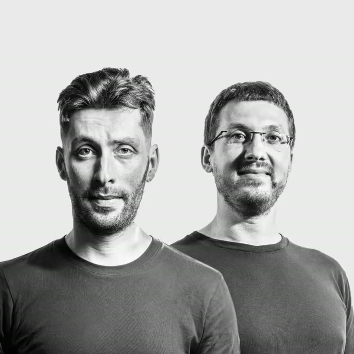

Артем отвечает за концепцию и дизайн, Арсений — за код и датчики. Дизайн и инженерию ведем параллельно: нарисовать экспонат, а потом встроить картинку в железо без изменений почти невозможно.

Концепция
Можем сами придумать концепцию экспоната или экспозиции. Если у музея уже есть архитектурная концепция, развиваем ее.
Контент и дизайн
Сценарий, интерфейсы, 3D-графика и анимация. Берем информацию об экспозиции и экспонате и перерабатываем ее под каждый экран.
Инженерия и код
Датчики, механика, контроллеры и разработка программ. Например, на тачскринах отключаем системные жесты, чтобы посетитель не вышел из экспоната.
Запуск
Настраиваем на площадках по всей России. Для долгих экспозиций делаем панель управления и обучаем сотрудников.